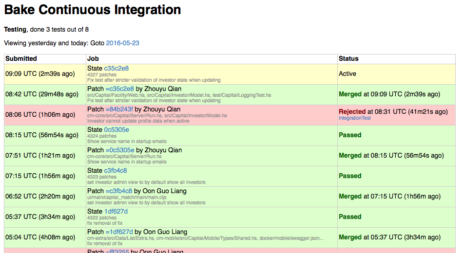
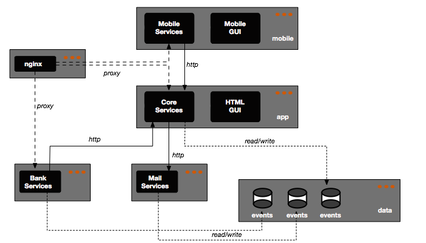

Haskell-based Infrastructure
In my previous post I focused on the build and development tools. This post will conclude my series on Capital Match by focusing on the last stage of the rocket: How we build and manage our development and production infrastructure. As already emphasized in the previous post, I am not a systems engineer by trade, I simply needed to get up and running something while building our startup. Comments and feedback most welcomed!
Continuous Integration
Continuous Integration is a cornerstone of Agile Development practices and something I couldn’t live without. CI is a prerequisite for Continuous Deployment or Continuous Delivery: It should ensure each and every change in code of our system is actually working and did not break anything. CI is traditionally implemented using servers like Jenkins or online services like Travis that trigger a build each time code is pushed to a source control repository. But people like David Gageot, among others, have shown us that doing CI without a server was perfectly possible. The key point is that it should not be possible to deploy something which has not been verified and validated by CI.
CI Server
We settled on using a central git repository and CI server, hosted on a dedicated build machine:
Git repository’s master branch is “morally” locked: Although technically it is still possible to push to it, we never do that and instead push to a
reviewbranch which is merged to themasteronly when build passes,The git repository is configured with a git deploy hook](https://www.digitalocean.com/community/tutorials/how-to-use-git-hooks-to-automate-development-and-deployment-tasks) that triggers a call to the CI server when we push on the
reviewbranch,Our CI server is implemented with bake, a robust and simple CI engine built - guess what? - in Haskell. Bake has a client/server architecture where the server is responsible for orchestrating builds that are run by registered clients, which are supposed to represent different build environments or configurations. Bake has a very simple web interface that looks like

Bake provides the framework for executing “tests”, reporting their results and merging changes to
masterbranch upon successful build, but does not tell you how your software is built: This is something we describe in Haskell as a set of steps (bake calls them all tests) that are linked through dependencies and possibly dependent on the capabilities of the client. Here is a fragment of the code for building Capital Match:data Action = Cleanup | Compile | Dependencies | RunDocker | Deploy ImageId | IntegrationTest | UITest | EndToEndTest deriving (Show,Read) allTests :: [Action] allTests = [ Compile , Dependencies , IntegrationTest , UITest , EndToEndTest , Deploy appImage , RunDocker ] execute :: Action -> TestInfo Action execute Compile = depend [Dependencies] $ run $ do opt <- addPath ["."] [] () <- cmd opt "./build.sh --report=buildreport.json" Exit _ <- cmd opt "cat buildreport.json" sleep 1 incrementalDone execute IntegrationTest = depend [Compile] $ run $ do opt <- addPath ["."] [] () <- cmd opt "./build.sh test" incrementalDoneThe code is pretty straightforward and relies on the toplevel build script
build.shwhich is actually a simple wrapper for running our Shake build with various targets.The output of the CI process, when it succeeds, is made of a bunch of docker containers deployed to Dockerhub, each tagged with the SHA1 of the commit that succeeded,
We extended bake to use git notes to identify successful builds: We attach a simple note saying
Build successfulto those commits which actually pass all the tests. We also notify outcome of the build in our main Slack channel,Bake server and client are packaged and deployed as docker containers, which means we can pull and use those containers from any docker-enabled machine in order to reproduce a CI environment or trigger builds through bake’s command-line interface,
As the last stage of a successful build we deploy a test environment, using anonymized and redacted sample of production data.
Testing
An significant time slice of our build is dedicated to running tests. Unit and server-side integration tests are pretty straightforward as they consist in a single executable built from Haskell source code which is run at IntegrationTest stage of the CI build process. Running UI-side tests is a little bit more involved as it requires an environment with PhantomJS and full ClojureScript stack to run leiningen. But the most interesting tests are the end-to-end ones which run Selenium tests against the full system.
The complete ETE tests infrastructure is packaged as - guess what? - a set of containers orchestrated with
docker-composeand mimicking production setup:- One container per service,
- One container for the nginx front-end,
- One container for the SeleniumHub,
- One container for a Firefox node in debug mode (this allows us to use VNC to log into the container and see the Firefox instance executing the tests),
- and one container for the test driver itself,
Tests are written in Haskell using hs-webdriver, and we try to write them in a high-level yielding something like:
it "Investor can withdraw cash given enough balance on account" $ runWithImplicitWait $ do liftIO $ invokeApp appServer $ do iid <- adminRegistersAndActivateInvestor arnaudEMail adjustCashBalance_ (CashAdjustment iid 100001 (TxInvestorCash iid)) userLogsInSuccesfully appServer arnaud userPassword goToAccountSummary cashBalanceIs "S$\n1,000.01" investorSuccessfullyWithdraws "500.00" cashBalanceIs "S$\n500.01" userLogsOutThose tests only need a single URL pointing at an arbitrary instance of the system, which makes it “easy” to run them during development outside of docker containers. It’s even possible to run from the REPL which greatly simplifies their development,
Getting the docker-based infrastructure right and reliable in CI was a bit challenging: There are quite a few moving parts and feedback cycle when working with containers is slow. We ran into subtle issues with things like:
- Differing versions of Firefox between local environment and container leading to different behaviours, like how visibility of DOM elements is handled which may or may not prevent
clickactions to complete - Timezone differences between various containers yielding different interpretations of the same timestamp (official Selenium docker images are configured to use PST whereas test driver container uses SGT,
- Connections and timeouts issues between all the containers depending on open ports and network state,
- …
- Differing versions of Firefox between local environment and container leading to different behaviours, like how visibility of DOM elements is handled which may or may not prevent
However, once in place and executing reliably, those tests really payoff in terms of how much confidence we have in our system. We don’t aim to provide 100% feature coverage of course and try to keep ETE tests small: The goal is to ensure our system’s main features are still usable after each change.
Deployment
Provisioning & Infrastructure
We are using DigitalOcean’s cloud as our infrastructure provided: DO provides a much simpler deployment and billing model than what provides AWS at the expense of some loss of flexibility. They also provide a simple and consistent RESTful API which makes it very easy to automate provisioning and manage VMs.
- I wrote a Haskell client for DO called hdo which covers the basics of DO API: CRUD operations on VMs and listing keys,
- Provisioning is not automated as we do not need capacity adjustments on the go: When we need a machine we simply run the script with appropriate credentials. Having a simple way to provision VMs however has a nice side-effect: It makes it a no-brainer to fire copy of any environment we use (Dev, Ci or Production) and configure it. This was particularly useful for pairing sessions and staging deployment of sensitive features,
- We also use AWS for a couple of services: S3 to backup data and host our static web site and CloudFront to provide HTTPS endpoint to website.
Configuration Management
Configuration of provisioned hosts is managed by propellor, a nice and very actively developed Haskell tool. Configuration in propellor are written as Haskell code using a specialized “declarative” embedded DSL describing properties of the target machine. Propellor’s model is the following:
- Configuration code is tied to a git repository, which may be only local or shared,
- When running
./propellor some.host, it automatically builds then commits local changes, pushing them to remote repository if one is defined. All commits are expected to be signed, - Then propellor connects through SSH to
some.hostand tries to clone itself there, either by plain cloning from local code ifsome.hosthas never been configured, or by merging missing commits if host has already been configured (this implies there is a copy of git repository containing configuration code on each machine), - In case architectures are different, propellor needs to compile itself on the target host, which might imply installing additional software (e.g. a Haskell compiler and needed libraries…),
- Finally, it runs remote binary which triggers verification and enforcement of the various “properties” defined for this host.
Propellor manages security, e.g. storing and deploying authentication tokens, passwords, ssh keys…, in a way that seems quite clever to me: It maintains a “store” containing sensitive data inside its git repository, encrypted with the public keys of accredited “users”, alongside a keyring containing those keys. This store can thus be hosted in a public repository, it is decrypted only upon deployment and decryption requires the deployer to provide her key’s password.
Here is an example configuration fragment. Each statement separated by & is a property that propellor will try to validate. In practice this means that some system-level code is run to check if the property is set and if not, to set it.
ciHost :: Property HasInfo
ciHost = propertyList "creating Continuous Integration server configuration" $ props
& setDefaultLocale en_us_UTF_8
& ntpWithTimezone "Asia/Singapore"
& Git.installed
& installLatestDocker
& dockerComposeInstalledIn practice, we did the following:
- All known hosts configurations are defined in a configuration file (a simple text file containing a Haskell data structure that can be
Read) and tells, for each known IP/hostname, what type of configuration should be deployed there and for production hosts what is the tag for containers to be deployed there. As this information is versioned and committed upon each deployment run, we always know which version of the system is deployed on which machine by looking at this configuration, - We also defined a special clone configuration which allows us to deploy some version of the system using cloned data from another system,
- We ensure the application is part of the boot of the underlying VM: Early on we had some surprises when our provider decided to reboot the VM and we found our application was not available anymore…
Deployment to Production
Given all the components of the application are containerized the main thing we need to configure on production hosts apart from basic user information and firewall rules is docker itself. Apart from docker, we also configure our nginx frontend: The executable itself is a container but the configuration is more dynamic and is part of the hosts deployment. In retrospect, we could probably make use of pre-canned configurations deployed as data-only containers and set the remaining bits as environment variables.
Doing actual deployment of a new version of the system involves the following steps, all part of propellor configuration:
- We first check or create our data containers: Those are the containers which will be linked with the services containers and will host the persisted event streams (see post on architecture),
- We then do a full backup of the data, just in case something goes wrong…
- And finally rely on docker-compose to start all the containers. The
docker-compose.ymlconfiguration file is actually generated by propellor from some high-level description of the system which is stored in our hosts configuration file: We define for each deployable service the needed version (docker repository tag) and use knowledge of the required topology of services dependencies to generate the needed docker links, ports and names.
The net result is the something like the following. The dark boxes represent services/processes while the lighter grayed boxes represent containers:

We were lucky enough to be able to start our system with few constraints which means we did not have to go through the complexity of setting up a blue/green or rolling deployment and we can live with deploying everything on a single machine, thus alleviating to use more sophisticated container orchestration tools.
Rollbacks
Remember our data is a simple persistent stream of events? This has some interesting consequences in case we need to rollback a deployment:
- If the version number has not been incremented, rollbacking simply means reverting the containers’ tag to previous value and redeploying: Even if some events have been recorded before we are notified of an issue implying rollback is needed, they should be correctly interpreted by the system,
- If the version has changed during deployment, then either we cannot rollback because new events have been generated and stored and we must roll-forward ; or we can rollback at the expense of losing data. This is usually not an option but still is possible if stored events are “harmless” business-wise, like authentication events (logins/logouts): A user will simply have to login again.
Monitoring
Monitoring is one the few areas in Capital Match system where we cheated on Haskell: I fell in love with riemann and chose to use it to centralize log collections and monitoring of our system.
- Riemann is packaged as a couple of containers: One for the server and one for the dashboard, and deployed on a dedicated (small) VM. Both server and dashboard configuration are managed by propellor and versioned,
- As part of the deployment of the various VMs, we setup and configure stunnels containers which allow encrypted traffic between monitored hosts and monitoring server: On the monitoring host there is a stunnel server that redirects inbound connections to running docker containers, whereas on monitored hosts the stunnel server is referenced by clients and encapsulate traffic to remote monitoring host transparently,
- Riemann is fed 2 types of events:
- System level events which are produced by a collectd installed on each deployed host,
- Applicative level events which are produced by the deployed services as part of our logging system,
- Applicative events are quite simple at the moment, mostly up/down status and a couple of metrics on HTTP requests and disk storage latency and throughput,
- There is a simple riemann dashboard that presents those collected events in a synoptic way,
- It is very easy to extend riemann with new clients or external connectors: At one point I considered using LogMatic to host some business-level dashboards and it took me a few hours to build a riemann plugin to send events to Logmatic’s API,
- Riemann’s event model is very simple and flexible hence it is an ideal candidate for being a one-stop sink for all your events: Dump all events to riemann using a single connector in the application and configure riemann server to massage the events and feed specialized clients,
- There a couple of alerts configured in Riemann that notifies slack when disks fill up or hosts are down.
We also have set up external web monitoring of both application and web site using Check My Website.
Discussion
Some takeaways
- Docker has its shortcomings, is far from being perfect and is becoming bloated like all enterprise software, but packaging all parts of a system as containers is a good thing. It allowed us to grow a flexible yet consistent system made of a lot of moving parts with diverse technological requirements. Containers are obviously great for development, providing a simple and efficient way of packaging complex tools and environments in an easy to use way. But they are also great for operations: They are more flexible than VMs, they can be as secure if one takes care to trim them down to the bare minimum, and pretty compact, they give you great flexibility in terms of deployment,
- I still don’t have much experience, apart from small experiments, on how to deploy docker over multiple machines. However the ecosystem of tools for managing more complex deployments is growing and maturing fast and beside I have a couple ideas on how to do it in a “simple way” using OpenVSwitch,
- Docker containers should do one and only one thing and they should be kept minimal: Don’t use default fat images and try to trim them down to the bare minimum (e.g. executable + support libraries + configuration files),
- I did not pay enough attention to build time, or more precisely I did not pay attention often enough,
- Automating as much as possible of the whole system is an investment: If you are going to throw it away in a few months, don’t do it ; but if you are going to live with it for years, do it now because later it will be too late to really payoff,
- Having automated ETE tests is a great thing but they should be kept to a minimum: Always consider the relative size of the layers in the pyramid and do not try to cover bugs or “deviant” behaviour at the level of ETE tests,
- Monitoring must be baked into the system from the onset, even if with simple solutions and basic alerts. It is then easy to extend when business starts to understand they could leverage this information,
- propellor is a great tool for provisioning. I tried things like Chef or Puppet before and the comfort of working in Haskell and not having to delve into the intricacies of complex “recipes” or custom DSL is invaluable. Propellor is simple and suits my requirements pretty well, however there are a couple of pain points I would like to find some time to alleviate:
- Tying deployment runs to git commits is really a good thing but this should be more customizable: I would like to keep deployment code in the same repository than production code but this currently would yield a lot of identically named commits and pollute the log of the repository,
- Propellor needs to be built on the target machine as it is an executable: It can upload itself when architecture matches hence it would be better to run deployment inside a dedicated container that match the target OS in order to remove the need to install GHC toolchain,
- It is hard to write and maintain idempotent properties: It would be simpler to be able to run propellor only once on a machine, forcing immutable infrastructure.
Conclusion
Growing such a system was (and still is) a time-consuming and complex task, especially given our choice of technology which is not exactly mainstream. One might get the feeling we kept reinventing wheels and discovering problems that were already solved: After all, had we chosen to develop our system using PHP, Rails, Node.js or even Java we could have benefited from a huge ecosystem of tools and services to build, deploy and manage it. Here are some benefits I see from this “full-stack” approach:
- We know how our system works down to the system level, which allows us to take informed decisions on every part of it while understanding the global picture. The knowledge gained in the process of growing this system has a value in and of itself but is also an asset for the future: The better we know how the system works, the faster we can adpat it to changing requirements and constantly evolving environment,
- It has been definitely frustrating at time but immensely fun to experiment, learn, tweak, fail or succeed, with all those moving parts,
- It forces us to really think in terms of a single unified system: Being in charge of the whole lifecycle of your code, from writing the first line to deployment to production to retirement yields a sense of responsibility one does not gain from working in silos and throwing some bunch of code over the wall to ops team. This is truly DevOps in the way Patrick Debois initially coined the term, as a kind of system-thinking process and genuinely drives you to the You build it, you run it culture,
- Managing operations, even at a small scale, is demanding, hence the need to think about automation, monitoring and short deployment cycles as early as possible in order to minimize the need for manual interventions.
This completes a series of post I have written over the past few months, describing my experience building Capital Match platform:
- Anatomy of a Haskell-based Application described the overall design and architecture of the application,
- Using agile in a startup detailed our development process,
- Haskell-based Development Environment focused on the build system and development environment.